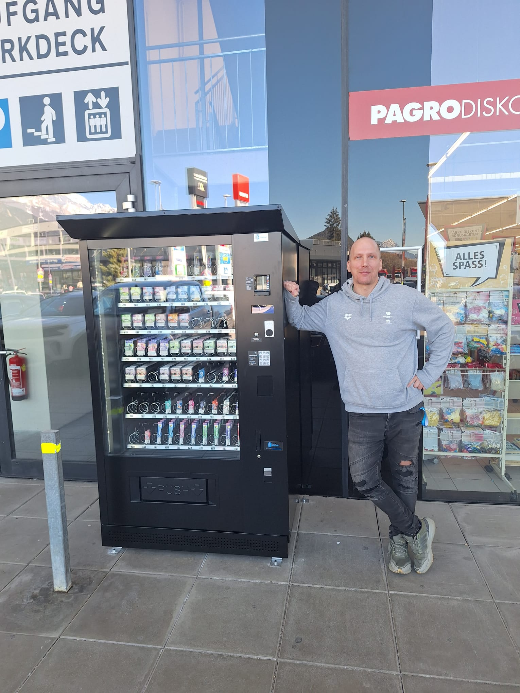

VapeCrystal ist ein österreichisches Unternehmen mit Sitz in Linz, das sich auf moderne, altersverifizierte E-Zigarettenautomaten spezialisiert hat. Unsere Mission ist es, in ganz Österreich eine „gesündere“ Alternative zum herkömmlichen Rauchen zu unterstützen – für alle, die keinen brennenden Tabak inhalieren möchten, den Geruch von Zigaretten vermeiden oder aktiv nach Möglichkeiten suchen, vollständig mit dem Rauchen aufzuhören.
Das Unternehmen wird von Norbert Bokoli gemeinsam mit seinem Geschäftspartner und Mentor János Komlódi geführt.
Mit über 25 Jahren internationaler Führungserfahrung in den Bereichen Informationsmanagement, Prozessdesign, IT-Architektur, Projektmanagement (agil & klassisch), Supply Chain, Compliance und Business Intelligence bringt er umfassende Expertise in den Aufbau effizienter, skalierbarer und zukunftssicherer Unternehmensstrukturen ein.
Seine Erfahrung aus verschiedenen Branchen – von FMCG über Pharma bis hin zur Produktion – bildet ein entscheidendes Fundament für die professionelle Weiterentwicklung unseres Unternehmens.
Die persönliche Erfahrung von Norbert – der nach über zehn Jahren des Rauchens mit Hilfe der E-Zigarette vollständig vom Tabakkonsum losgekommen ist – sowie die umfassende unternehmerische und führungstechnische Expertise von János bilden ein starkes Fundament, auf dem VapeCrystal als verlässlicher, qualitätsorientierter und langfristiger Partner für Standorte in ganz Österreich auftreten kann.